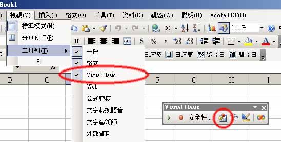
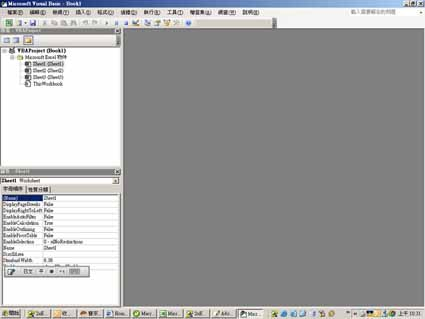

2.將這2個檔案儲存到Windows元件目錄中:Windows 32bit存到c:/windows/system32/中，Windows 64bit存到c:/windows/syswow64/中
3.若使用系統出現無法正確顯示操作元件的錯誤訊息，這是因為使用者的Excel檔尚為引用上述元件，請不要關閉檔案，依照下列步驟設定即可：
4.開啟Visual Basic Editor


5.在工具→設定引用項目，選取剛剛存入的元件c:/windows/system32/MSCOMCT2.OCX及c:/windows/system32/MSCOMCTL.OCX就可正常取用月曆物件及Lisiview了。